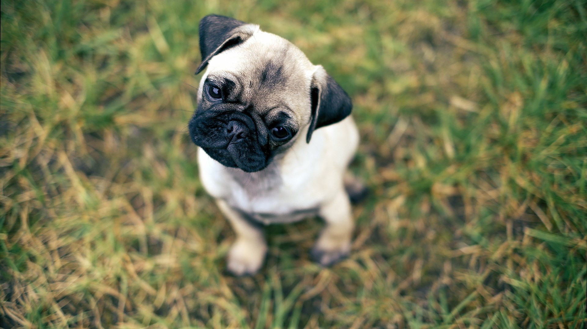

cualidades de los pugs o carlinos
El carlino es lindo, amoroso y cariñoso. Son excelentes compañeros y amigos muy leales. Pero no son para todo el mundo. Aquí hay algunas cosas que usted debe saber antes de llevarse a casa su primer carlino. Cosas a tener en cuenta antes de decidirnos por un carlino. Los carlinos son difíciles Los carlinos suelen ser muy tercos. Si quieren una golosina o un juguete, van a llorar por ello hasta conseguirlo. ¡Es tan simple como eso! Algunos pueden referirse a carlinos como “los necesitados”, pero una mejor descripción para ellos, sería probablemente “infantil”. Ellos quieren lo que quieren cuando lo quieren. ¡Toneladas de diversión! Son muy divertidos y les encanta hacer cosas tontas para llamar su atención. A la mayoría de los carlinos ni siquiera les importa desfilar con ropa descarada, y probablemente por eso que algunos les llaman “los payasos del reino animal”. Son inteligentes Son mucho más inteligente de lo que parecen (¡Gracias a Dios!) y que son principiantes rápidos cuando se trata de cosas que los excitan o motivan. Por ejemplo, encontrar la manera de llegar a las galletas que están sobre la mesa será como la guinda del pastel para cualquier carlino. Aprenden rápidamente cuando encontramos la manera de obtener toda su atención. Algunos dicen que los carlinos son difíciles de entrenar, y claro, en algunos carlinos se puede dar el caso (como en cualquier otra raza de perro). Sin embargo, con una saludable dosis de paciencia por parte suya y un montón de dulces chucherías,los carlinos pueden aprender un montón de trucos geniales.
Recuerda comprar sus implementos básicos como una camita, platos de comida para su cuidado.
¡Cuidados de un pug!
El Pug no es tan alegremente sociable como algunos de la raza miniatura. Son un poco más serios, con un sentido del humor seco. La raza motto es "multum in parvo", significa mucho en pequeño, mucho perro en un paquete pequeño. El Pug puede ser obstinado pero normalmente quiere agradar. Son perros lo suficientemente tranquilos, no suelen ladrar mucho, ni cavar, ni masticar. El Pug tiende a llevarse bien con otros perros y son lo suficientemente fuertes para llevarse con los niños. Disfrutan la compañía y pueden ser cariñosos. Fiel a su grupo, son buenos perros de compañía.
Caracteristicas
- Rango de peso: Macho: 14 -18 lbs. Hembra: 14 -18 lbs.
- Criado para: Gran juego de arrastre y perro versátil de casería
- Expectativas: Ejercicio requerido: 20 minutos por día. Nivel de energía: promedio Promedio de vida: 12 a 15 años Tendencia a babear: baja Tendencia a roncar: alta Tendencia a ladrar: moderado Tendencia a excavar: baja Necesidades sociales/de atención: alta